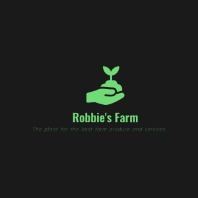
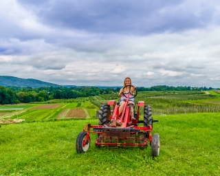

We raise corn, soybeans, popcorn, and wheat. More specifically we grow dent corn, waxy corn, commercial soybeans, soybeans for seed, popcorn, and winter wheat.


Frequently Asked Questions
We use no commercial fertilizers, nor organic ones. Our program is all about building soil health, not about applying a band-aid to resolve a problem. If we build the soil health, we don’t need fertilizer.
Many people are interested in what happens to our grain after we harvest. Much of it is stored on our farm following harvest except for popcorn and wheat. Throughout the year we deliver grain to various places.
No, not officially. Obtaining USDA organic certification is an incredibly expensive process. For a small business like ours obtaining that certification is cost prohibitive. Instead, we grow to standards many would label as beyond organic. While growing inside doesn't eliminate crop irritants and pests entirely it does drastically reduce them and we use a version of integrated pest management (IPM) when needed. We do not spray our crops with pesticides and instead use beneficial insects to target any pests within the farm.
We currently offer no-contact delivery on Tuesday and Thursday and no-contact pick up from the farm Tuesday-Friday from 10am-2pm.